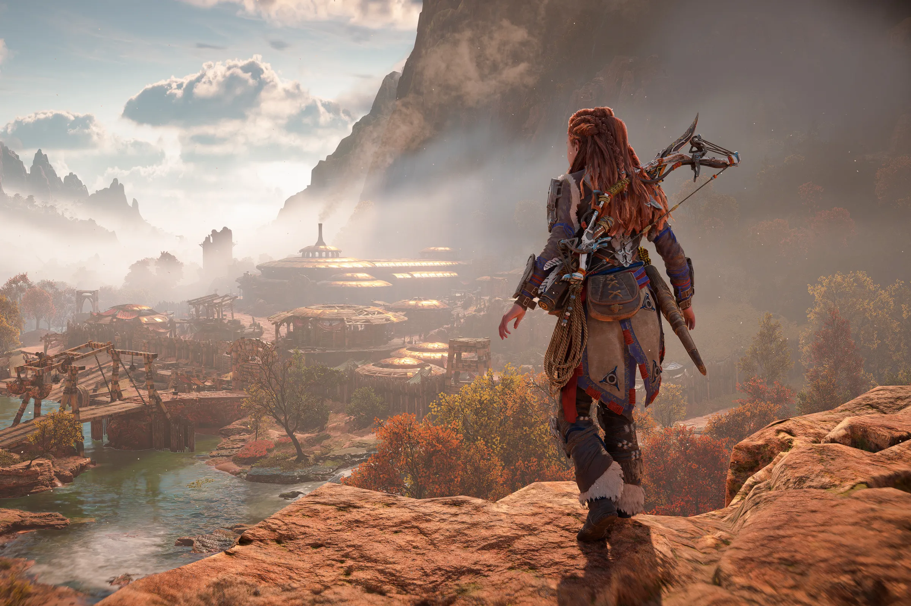
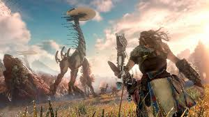
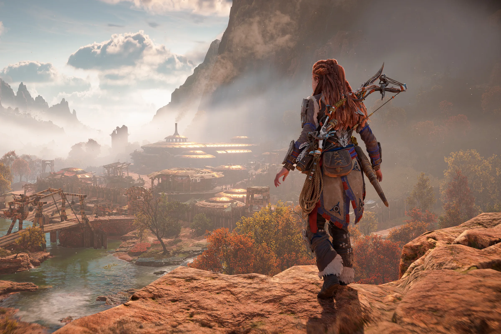
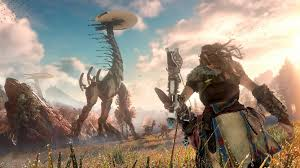
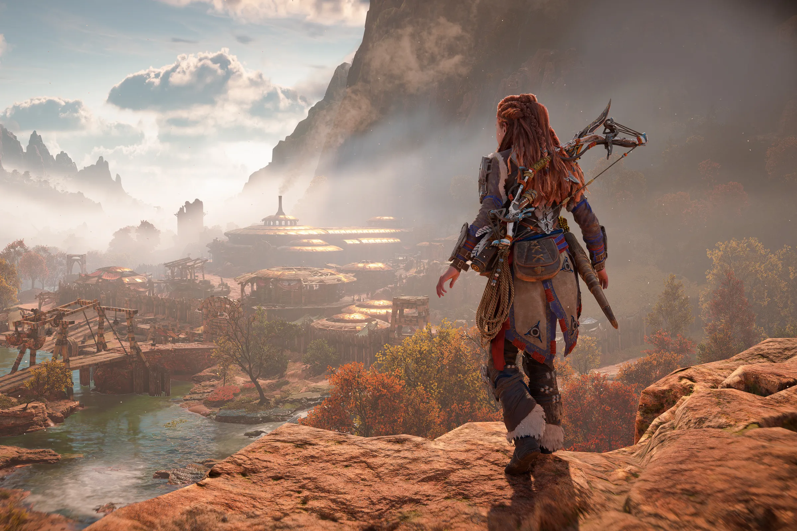
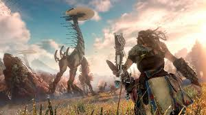

Horizon Forbidden West es un videojuego de rol de acción, aventura y mundo abierto desarrollado por Guerrilla Games y distribuido por Sony Interactive Entertainment, el juego está disponible para PlayStation 4, PlayStation 5 y a partir del 21 de marzo del 2024 para Microsoft Windows.



 


